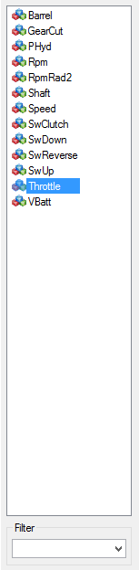
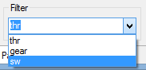

The channel list shows the list of data channels contained in the data file loaded.
Channel list is located in the left side panel of the analysis window. It is visible by default but it can be hidden by clicking on the 'Show/Hide channel list'  button of the tool bar. Once hidden, click again on this button to get the channel list back.
button of the tool bar. Once hidden, click again on this button to get the channel list back.
Double click on a channel to add it in the graphic. This can also be done by a 'drag & drop' of a channel (or a bunch of channels) from the channel list to the graphic area.
Alternatively, select channels that you want to add in the graphic and press 'Enter'.

At the bottom of the channel list there is the 'Filter' area. This area permits to filter channel names shown in the list. Just type a name or a part of a name that you are looking for and press enter. If the character sting that you typed in is contained into one or more channels, only those channels will be shown in the list.

Filter is text box is actually a list that stores the last ten filters used. Just select that filter to reuse it.

Clear the filter text box to reset the filter and get back the whole channel list.
Created with the Personal Edition of HelpNDoc: Easy to use tool to create HTML Help files and Help web sites